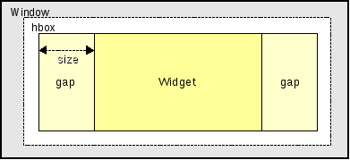

<gap>
This element can be used as child within
<hbox> and
<vbox>
elements.
It cannot have any child widgets.
An example how a <gap> widget behaves in a <hbox> widget looks as follows:

Translated to xml it would look like this:
<mainwindow w="100%" h="100%" >
<hbox>
<gap size="20%" />
<label size="60%" />
<gap size="20%" />
</hbox>
</mainwindow>
The gap widget can be used within nested combinations of <vbox> and <vbox>